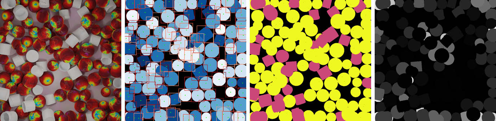

MCAC: A Multi-Class Class-Agnostic Counting Dataset
MCAC

MCAC Example. Each object in the RGB image has an associated: Model ID, Class ID, Center Coordinate,
Bounding Box and Occlusion
Percentage.
More examples can be seen here.
MCAC is the first multi-class class-agnostic counting dataset. each image contains between 1 and 4 classes of
object and between 1 and 300 objects per class.
The classes of objects present in the Train, Test and Val splits are mutually exclusive, and where possible
aligned with the class splits in
FSC-133.
Each object is labeled with an instance, class and model number as well as its center coordinate, bounding box coordinates and its percentage occlusion
Models are taken from ShapeNetSem. The original model IDs and manually verified category labels are preserved.
MCAC-M1 is the single-class images from MCAC. This is useful when comparing methods that are not suited to multi-class cases.
Each object is labeled with an instance, class and model number as well as its center coordinate, bounding box coordinates and its percentage occlusion
Models are taken from ShapeNetSem. The original model IDs and manually verified category labels are preserved.
MCAC-M1 is the single-class images from MCAC. This is useful when comparing methods that are not suited to multi-class cases.
Statistic
| Count Values | Num Classes | ||||||||||
| # | Classes | Min | Median | Mean | Max | Min | Median | Mean | Max | ||
| MCAC | |||||||||||
| Train | 8298 | 287 | 1 | 23 | 46.87 | 298 | 1 | 2 | 1.75 | 4 | |
| Val | 4286 | 37 | 1 | 24 | 46.52 | 297 | 1 | 2 | 1.78 | 4 | |
| Test | 3640 | 19 | 1 | 25 | 50.80 | 296 | 1 | 2 | 1.72 | 4 | |
| Total | 16224 | 343 | 1 | 23 | 47.66 | 298 | 1 | 2 | 1.75 | 4 | |
| MCAC-M1 | |||||||||||
| Train | 2186 | 287 | 5 | 102 | 112.42 | 298 | 1 | 1 | 1 | 1 | |
| Val | 1060 | 37 | 3 | 96 | 110.56 | 297 | 1 | 1 | 1 | 1 | |
| Test | 1013 | 19 | 1 | 117 | 124.89 | 291 | 1 | 1 | 1 | 1 | |
| Total | 4259 | 343 | 1 | 102 | 114.89 | 298 | 1 | 1 | 1 | 1 | |
Benchmark Results
| Val | Test | |||||||||
| Method | Shots | MAE | RMSE | NAE | SRE | MAE | RMSE | NAE | SRE | |
| Mean | N/A | 39.87 | 53.56 | 3.07 | 11.40 | 42.67 | 59.68 | 2.79 | 10.93 | |
| Median | N/A | 36.25 | 58.15 | 1.51 | 6.70 | 39.81 | 65.36 | 1.38 | 6.73 | |
| FamNet | 3 | 24.76 | 41.12 | 1.12 | 6.86 | 26.40 | 45.52 | 1.04 | 6.87 | |
| BMNet | 3 | 15.83 | 27.07 | 0.71 | 4.97 | 17.29 | 29.83 | 0.75 | 6.08 | |
| CounTR | 3 | 15.07 | 26.26 | 0.63 | 4.79 | 16.12 | 29.28 | 0.67 | 5.71 | |
| ABC123 | 0 | 8.96 | 15.93 | 0.29 | 2.02 | 9.52 | 17.64 | 0.28 | 2.23 | |
File hierarchy
├── dataset_pytorch.py
├── make_gaussian_maps.py
├── test
├── train
│ ├── 1511489148409439
│ ├── 3527550462177290
│ | ├──img.png
│ | ├──info.json
│ | ├──seg.png
│ ├──4109417696451021
│ └── ...
└── val
Precomputing Denisty-Maps
To precompute Gaussian density maps of a different resolution or standard deviation run the following.
cd PATH/TO/MCAC/
python make_gaussian_maps.py --occulsion_limit --crop_size 672 --img_size --gauss_constant ;
Citation
@article{hobley2023abc,
title={ABC Easy as 123: A Blind Counter for Exemplar-Free Multi-Class Class-agnostic Counting},
author={Hobley, Michael and Prisacariu, Victor},
journal={arXiv preprint arXiv:2309.04820},
year={2023}}